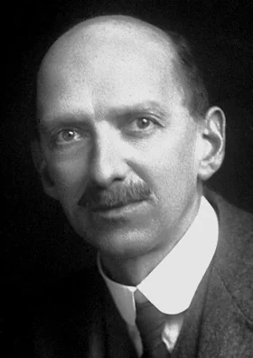
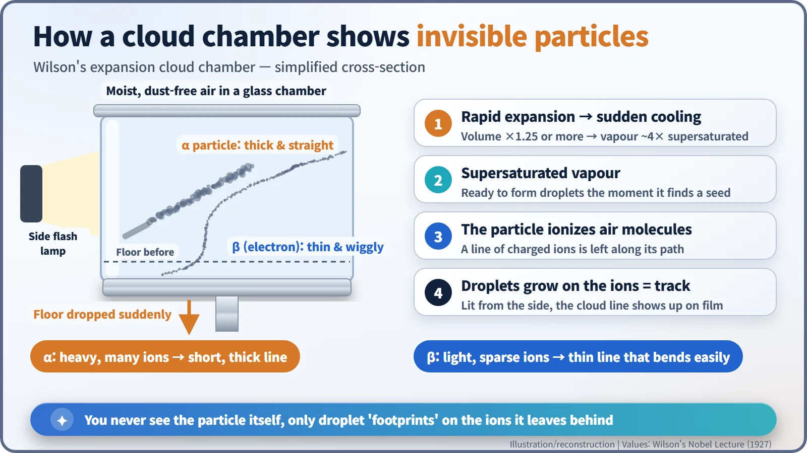
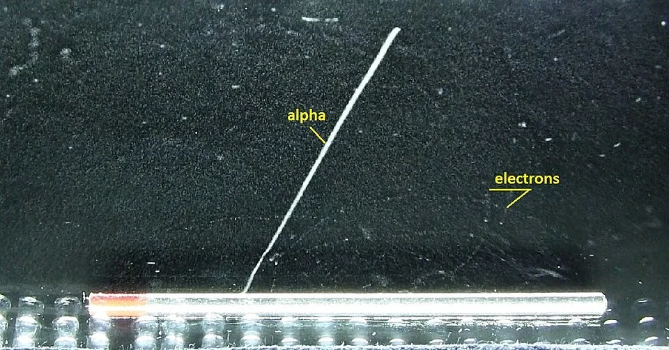
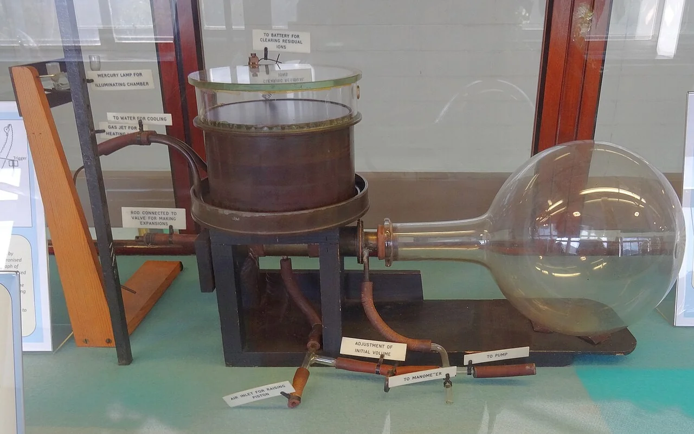
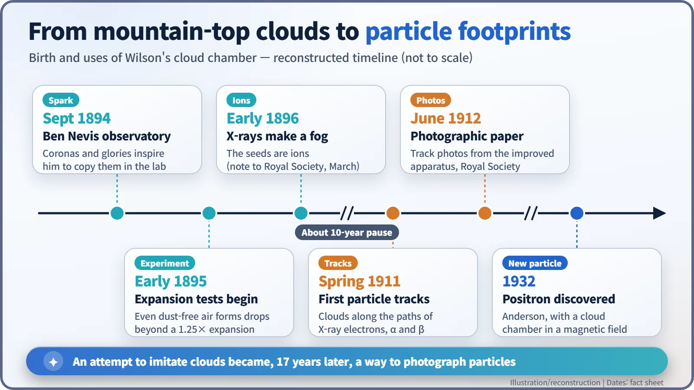

Nuclear History · 022
Contrails for Atoms — C.T.R. Wilson's Cloud Chamber (1911)
A weather-watcher who wanted to make clouds in the lab ended up drawing the paths of single particles in mist.
In the spring of 1911, C.T.R. Wilson saw the paths of single particles for the first time, drawn as thin lines of cloud inside a glass chamber. The idea grew out of a weather-watcher's wish to copy the coloured rings he had seen around clouds on Ben Nevis in 1894. His cloud chamber turned invisible radiation into something physicists could photograph, and it went on to reveal the positron and the muon.
Contrails for atoms
Look up on a clear day and you may see a jet's contrail: a white line drawn across the sky long after the aircraft itself has gone. The trail forms because water vapour in the cold air condenses onto tiny particles in the exhaust, turning an invisible path into a visible one. Now imagine shrinking that sky into a glass box and replacing the jet with a single particle flying out of a radioactive atom. That is, in essence, what the Scottish physicist Charles Thomson Rees Wilson (1869–1959) achieved in 1911. His device, the cloud chamber, let people see the paths of radiation for the first time.

A weather-watcher on Britain's highest peak
The story begins with weather, not radiation. Wilson, a farmer's son born near Edinburgh, had studied at Owens College in Manchester intending to become a doctor, then switched to physics at Cambridge, graduating in 1892. In September 1894 he spent a few weeks at the observatory that then stood on the summit of Ben Nevis, the highest mountain in the British Isles. [2]
What he saw there stayed with him. In his Nobel Lecture of 1927 he recalled "the coloured rings surrounding the sun (coronas) or surrounding the shadow cast by the hill-top or observer on mist or cloud (glories)", which "greatly excited my interest and made me wish to imitate them in the laboratory." [1]
A cloud that should not have formed
At the beginning of 1895, back at the Cavendish Laboratory in Cambridge, Wilson started making artificial clouds by letting moist air expand suddenly. Expanding air cools, and cool air cannot hold as much vapour, so droplets form, normally on specks of dust. But "almost immediately", he wrote, he came across something more interesting than the optical effects he had set out to study.
Even in air carefully cleaned of dust, a shower of drops appeared whenever he expanded the volume by more than about 1.25 times (enough to make the vapour roughly four times supersaturated). However often he repeated it, the number of drops did not fall. Something in the air kept supplying fresh "seeds" for droplets. [1]
X-rays reveal the seeds
At the end of 1895 came news of Röntgen's X-rays. Early in 1896 Wilson exposed his chamber to an X-ray tube and was delighted: a fog appeared that took many minutes to settle. X-rays knock electrons off air molecules, leaving electrically charged fragments called ions. When Wilson used an electric field to sweep the ions away before the expansion, no cloud formed. The seeds were ions. [1]
Then life intervened. Teaching and research on atmospheric electricity kept him away from condensation experiments for the better part of a decade. Meanwhile, physicists became increasingly convinced that alpha and beta rays were streams of individual particles. When Wilson returned to the work around 1910, he had a bold idea: if a single fast particle leaves a line of ions behind it, perhaps water could be made to condense along that line, and the particle's path could be photographed.
Spring 1911: wisps and threads
In the spring of 1911 his tests were still incomplete. But one day, as he later wrote, it occurred to him to try whether "some indication of the tracks might not be made visible with the rough apparatus already constructed." He tried X-rays first, "with little expectation of success", and was delighted to see the chamber "filled with little wisps and threads of clouds – the tracks of the electrons ejected by the action of the rays." [1]
Next he placed a radium-tipped metal tongue from a spinthariscope inside the chamber, and saw, for the first time, clouds condensed along the tracks of alpha particles. Long, thread-like tracks of fast beta particles followed. No exact date for this first observation survives; it is known only as "the spring of 1911".

The principle is simple. Drop the floor of the chamber suddenly and the air inside expands and cools, leaving the vapour supersaturated: it holds far more water than it "should" and is ready to condense the moment it finds a seed. A charged particle racing through ionizes the air along its path, and droplets grow on those ions. Lit from the side, the line of droplets shows up as a white streak that can be photographed. A heavy, doubly charged alpha particle makes ions thickly, leaving a short, thick, straight track; a light beta particle (an electron) leaves a thin track that wiggles and bends. You never see the particle itself, only its footprints.

From sketches to photographs
In April 1911 Wilson sent a short note with some rough photographs to the Royal Society. He spent the summer designing an improved apparatus, built in the Cavendish workshop, and over the winter took the pictures for a full paper communicated in June 1912. When he showed one of the first good alpha-track photographs to the physicist W. H. Bragg, Bragg pulled out a diagram he had just published of how he expected alpha paths to look. The resemblance, Wilson recalled, was "astonishing". Paths that had existed only in calculations were now on film. [1] [3] [4]

A camera for new particles
The cloud chamber soon became standard equipment in laboratories around the world. In 1932 Carl Anderson in California spotted a particle in a cloud chamber placed in a magnetic field that curved like an electron, but the opposite way: the positron, the first antimatter particle. In 1936 Anderson and Seth Neddermeyer found the muon with cloud chambers as well. Wilson shared the 1927 Nobel Prize in Physics with Arthur Compton, "for his method of making the paths of electrically charged particles visible by condensation of vapour." Rutherford is said to have called the cloud chamber "the most original and wonderful instrument in scientific history." [2] [5]
One common mix-up is worth clearing up. The cloud chambers built in classrooms and science museums today, cooled with dry ice and filled with alcohol vapour, are "diffusion" chambers, developed by Alexander Langsdorf in 1936. They stay sensitive continuously, unlike Wilson's expansion chamber with its sudden drop of the floor. From the 1950s the bubble chamber took over frontline research. Still, a young man's fascination with mountain-top clouds had changed nuclear physics for good: from then on, it could prove its claims with photographs. [5]
